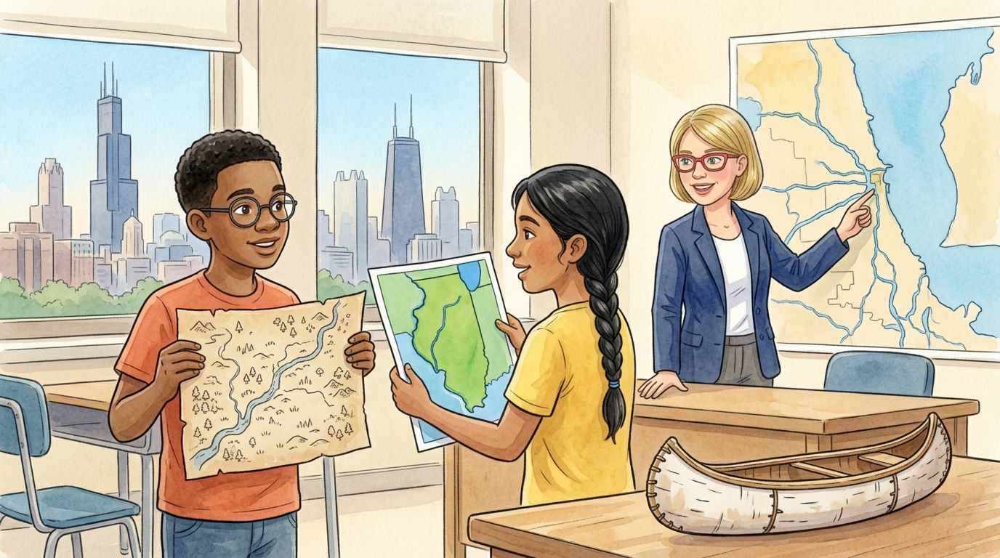

Grade 7 · Social studies · SS.6-8.H.2.MdC
Two canoes on the Great River
A story about two canoes in 1673, the people of Illinois who welcomed them, and a short path of land that would one day become a canal.
Dos canoas en el Gran Río. Un cuento sobre dos canoas en 1673, el pueblo de Illinois que las recibió y un corto camino de tierra que un día se convertiría en un canal.
Social studies words you will learn
Tap a green word to see what it means.
Toca una palabra verde para ver qué significa. Con la ayuda activada, verás también la definición en español.
The story
El cuento está en inglés. Pulsa «Listen to the story» para escucharlo y toca las palabras verdes cuando no entiendas una.
Ms. Novak unrolled a copy of an old French map. A long river wound across it, with tiny trees and villages drawn along its banks. "This map was drawn after an in 1673," she said. "Two Frenchmen paddled down the Mississippi and came back through the place where we are sitting."
"Louis Jolliet was a mapmaker and fur trader born near Quebec. Father Jacques Marquette was a Jesuit ," said Ms. Novak. "In May 1673, with five other men in two canoes, they set out from the Great Lakes to find the great river that Native peoples had told them about." Native nations called it by names that meant Great River.
"The Mississippi wasn't a secret to the people who lived there," said Salma. "Exactly," said Ms. Novak. "Along the river, the travelers met the Illinois people, a of several nations, including the Peoria and the Kaskaskia. The Illinois welcomed them with a feast and a calumet, a sacred pipe used in ceremonies of peace and friendship."
The canoes went south as far as the mouth of the Arkansas River. There, Marquette and Jolliet turned back. They had learned that the river flowed into the Gulf of Mexico, and they did not want to meet Spanish soldiers. On the way home, Illinois guides showed them a shorter route: up the Illinois River and the Des Plaines River.
"Near the end of that route was a short path over land between the Des Plaines River and the Chicago River," said Ms. Novak. "Travelers carried their canoes across it. It was called a ." She pointed to the map. "Jolliet wrote that a canal across just half a league of prairie, about a mile and a half, could connect Lake Michigan to the Mississippi." Daniel's eyes widened. "That's the canal from 1900!"
"More than 200 years later, yes," said Ms. Novak. Then she asked a question. "Many old books say that Marquette and Jolliet discovered the Mississippi. Is that right?" "Not from the Illinois ," said Salma. "They had lived on that river for generations. They knew the way. They showed the French the route." "From the French perspective, it was new to them," said Daniel. "Both are true," said Ms. Novak. "A historian asks: discovered by whom, and for whom?"
She explained how life changed for the Illinois after French traders and settlers came: new trade goods, new alliances, but also wars and diseases that greatly reduced their population. "Many Illinois people were forced to move away from their homeland. Their descendants are part of the Peoria Tribe of Indians of Oklahoma, a nation that keeps its history and culture alive today."
Before the bell, Daniel and Salma laid the old French map next to a modern map of Illinois. The rivers matched. Salma traced the route with her finger. "The French drew the map," she said, "but the Illinois people taught them the way." Ms. Novak smiled. "And our state still carries their name."
Pause to connect
Visual arts · VA:Cn11.1.7
Look at a map of the 1673 journey, drawn from Louis Jolliet's information around 1674 and kept today at the Library of Congress.
Observa un mapa del viaje de 1673, dibujado con la información de Louis Jolliet hacia 1674, que hoy se guarda en la Biblioteca del Congreso.
See the Jolliet map (Library of Congress) (opens in a new tab)
What you will see: An old map in soft colors, with the Great Lakes at the top and a long river running down toward the Gulf of Mexico. Small symbols mark the villages of many Native nations along the rivers, and a decorated box holds a title in French.
Lo que verás: Un mapa antiguo de colores suaves, con los Grandes Lagos arriba y un largo río que baja hacia el golfo de México. Pequeños símbolos marcan los pueblos de muchas naciones originarias a lo largo de los ríos, y un recuadro decorado contiene un título en francés.
- Find the Great Lakes and the long river. What did the mapmaker think was most important to show?Busca los Grandes Lagos y el largo río. ¿Qué pensaba el cartógrafo que era lo más importante de mostrar?
- The map marks many Native villages. What does that tell you about who already lived along the river in 1673?El mapa señala muchos pueblos originarios. ¿Qué te dice eso sobre quién vivía ya a lo largo del río en 1673?
Think about it, then answer in your notebook or talk it over with someone at home.
Check your thinking
The mapmaker put the rivers and lakes at the center, because water routes were the way to travel and trade. The many villages show that the river valley was home to many Native nations long before the French arrived. A map is a primary source that shows what its maker knew, wanted and valued.
Glossary
- expedition
- A journey made by a group of people for a special purpose, like exploring or mapping.
- expedición: Un viaje que hace un grupo de personas con un propósito especial, como explorar o hacer mapas.
- confederation
- A group of nations or peoples that join together for support and protection.
- confederación: Un grupo de naciones o pueblos que se unen para apoyarse y protegerse.
- missionary
- A person sent to another place to teach and spread a religion.
- misionero: Una persona enviada a otro lugar para enseñar y difundir una religión.
- portage
- A path over land where travelers carry their canoes from one river or lake to another.
- porteo: Un camino por tierra donde los viajeros cargan sus canoas de un río o lago a otro.
- perspective
- A point of view: the way a person or group sees an event.
- perspectiva: Un punto de vista: la manera en que una persona o un grupo ve un suceso.
- sovereign
- Having the right to govern yourself. Native nations are sovereign nations.
- soberano: Que tiene el derecho de gobernarse a sí mismo. Las naciones originarias son naciones soberanas.
Questions
Choose the correct answer. If you make a mistake, the story shows you where the answer is.
Elige la respuesta correcta. Si te equivocas, el cuento te muestra dónde está la respuesta.
-
Question A. Who were Jolliet and Marquette?
¿Quiénes eran Jolliet y Marquette?
Louis Jolliet was a mapmaker and fur trader, and Father Jacques Marquette was a Jesuit missionary.
-
Question B. How did the Illinois people welcome the travelers?
¿Cómo recibieron los illinois a los viajeros?
The Illinois welcomed them with a feast and a calumet, a sacred pipe used in ceremonies of peace and friendship.
-
Question C. What was the Chicago portage?
¿Qué era el porteo de Chicago?
It was a short path over land between the Des Plaines River and the Chicago River, where travelers carried their canoes.
-
Question D. Why is it misleading to say that the French discovered the Mississippi?
¿Por qué es engañoso decir que los franceses descubrieron el Misisipi?
From the Illinois perspective, it was not a discovery: they had lived there for generations and showed the French the route.
-
Question E. Where are the descendants of the Illinois people today?
¿Dónde están hoy los descendientes del pueblo illinois?
Many were forced to leave their homeland; their descendants are part of the Peoria Tribe of Indians of Oklahoma, a sovereign nation.
Challenge: explain your thinking
Compare perspectives
Write two short diary entries about the same day in 1673: one by a French traveler and one by an Illinois guide who shows the travelers the route home. Then explain one thing each person might notice that the other might not.
Compara perspectivas. Escribe dos entradas cortas de diario sobre el mismo día de 1673: una de un viajero francés y otra de un guía illinois que les enseña a los viajeros el camino de regreso. Después explica algo que cada uno podría notar y el otro no.
Answer in your notebook or talk it over with a classmate. Use evidence from the story.
Responde en tu cuaderno o coméntalo con un compañero. Usa evidencia del cuento.
Check your thinking
The French traveler might write about a new river, the size of the land and the chance for trade or a canal. The Illinois guide might write about strangers who did not know the way, the trade goods they carried and whether they could be good allies. Each person notices what matters to their own people: that is perspective. Your entries should show respect for both points of view.
Go further
Many places in Illinois have Native names, like Illinois, Chicago and Peoria. Choose one and find out what it means and which people gave it the name.
Para ir más lejos. Muchos lugares de Illinois tienen nombres de origen originario, como Illinois, Chicago y Peoria. Elige uno y averigua qué significa y qué pueblo le dio el nombre.
Check your thinking
Example: the name Chicago comes from a Miami-Illinois word for a wild onion, or wild garlic, that grew near the river. Peoria is the name of one of the nations of the Illinois Confederation. Names on a map are another kind of historical source: they remember who lived there first.